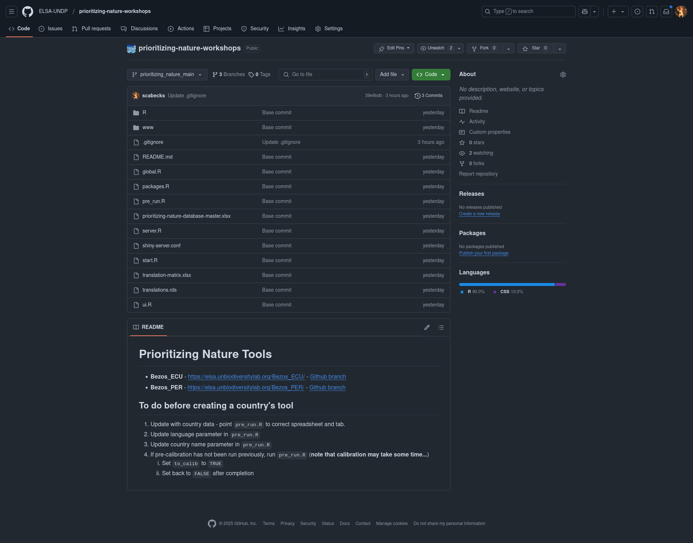

Code Repositories (git & GitHub)
The multiple permutations of the ELSA, Protecting Nature, and related webtools are manged as separate branches (think of branches as subtle offshoots of a main project, where there are main commonalities but subtle and smaller differences) of a single version controlled git repository hosted on GitHub. You may or may not be familiar with git (or other version control software) but, as the term implies, git is a control system thats tracks changes in code, documents, etc., and allows multiple people to collaborate, add new functionality, merge, and revert changes efficiently, all while maintaining a history of modifications that prevents conflicts and enables rollback to previous states if needed. This setup allows for a simplified management and development of shared functionality between tools, but still allow for bespoke development of tools specific to a project and country’s individual needs (ranging from tailored language/translations differences to data input specifications).
The publicly accessible repository for the Protecting Nature Webtools being used in these workshops can be accessed at:
Download - Protecting Nature Webtools GitHub Repository
Note
You do not need to be registered on GitHub, nor be familiar with GitHub to access this repository.
If you navigate to the URL above you should find yourself seeing the following (or similar):
{kind=link}
Important
For the rest of this training we will assume that you do not have any experience using git or GitHub and will show you how to download the repository code without using git.
For users who are familiar with git and GitHub please feel free to clone the repository to you computer.
In the repository there exists three (3) branches of the Protecting Nature Webtools:
prioritizing_nature_main (the main development branch)
prioritizing_nature_per (the branch for the Peru specific tool)
prioritizing_nature_ecu (the branch for the Ecuador specific tool)
At any one time you will be working with either the tool for Peru or the tool for Ecuador (depending on your preference of course). To do so, you will first download the branch of the repository corresponding to your country of preference, in a zip format. To select the branch of your choice:
Click on the dropdown menu that (by default) shows
prioritizing_nature_main.Select either the
prioritizing_nature_ecuorprioritizing_nature_perbranch.
{kind=link}
Once you have selected your desired branch:
Click on the box on the right that shows
<> Code(seen in Green in the image below).
Note
The <> Code button may be another colour if you use another theme in your browser.

Click on the
Download ZIPicon.
The download of the branches for Ecuador and Peru are approximately 7MB and 37MB each, respectively.
Important
- Why the large difference in size, you might be wondering?
Peru is larger (equals more planning units) and (more significantly) has more input feature layers.
Geospatial Data
The repositories (branches) that you just downloaded are as large as they are because they already contain the preprocessed and pre-created data for the feature layers, zones, and existing protected areas and OECMs in each country. We will not be covering the install of Desktop GIS program in this training, but it is easy to explore these geospatial data layers using a Desktop GIS platform (such as QGIS).
Important
If you do not have an existing Desktop GIS installed on your computer, QGIS is one of the best, and it is also free and open-source. You can find download and installation instructions from QGIS.
Also note that R can be also be a very capable Desktop-ish GIS as well - the very good Geocomputation with R provides all you might need to know.
In the next section we will explore how the data directory of the repository is structured, and where you can find and explore the geospatial data.